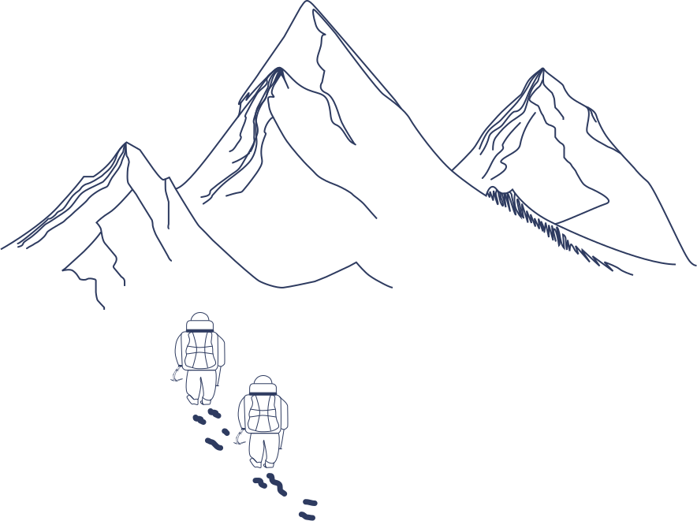

Everest
Data Viz
 Tip : use the space bar the down
Tip : use the space bar the down  arrowkeys on
arrowkeys on
your keyboard for a better experience.

Tip : use the space bar the down arrowkeys on
your keyboard for a better experience.
Mount Everest, known as the highest mountain in the world, reaches an elevation of
8,849 meters. It
is located on the crest of the Great Himalayas that lies on the border between Nepal
and Tibet. This
dangerous mountain is shaped like a three-sided pyramid. The three generally flat planes
constituting the sides are called faces, and the line by which two faces join is known as a ridge.
Even though the first major expeditions began in the 1920s, the first time the summit was reached
was in May 1953 by Tenzing Norgay. Mount Everest, also surnamed the “Peak
of Heaven” has since
attracted many climbers who have tried this unique experience, climbing to the top of the world. But
it remains a dangerous and not always successful expedition that can end in death. This mountain is
the result of more than 250 deaths.
>Everest represents a challenge and an opportunity to push your limits, inspiring many to prove they
can achieve it.
Here, the number of climbers actually refers to the number of people who successfully reached the
summit.
To reach the summit, climbers start at Base Camp (5,334m) and pass three camps before entering the
death zone (8,000–8,850m). The final camp, at 8,016m, leaves just 833m to the summit, the highest
point on Earth.
In 2019, Everest saw a record 876 ascents. However, no summits occurred in 2015 due to a devastating
earthquake in Nepal. Similarly, the COVID-19 pandemic prevented any climbs in 2020.
Hover the snowflakes for further details
Everest is so tall and its climate so severe that it is incapable of supporting
sustained human occupation and it is indeed, really dangerous to climb. The most
hospitable period for an ascent is during April and May. Everest has a
fatality rate at about 6.5 deaths per 100 successful climbers.
Since 1978, the deadliest years were 1996 with 15
deaths, 2014 with 16 deaths and 2023 with
18 deaths.
The top 3 causes of death on Everest are Avalanche, Falls, and Acute mountain sickness. There are different steps during the ascension, and the more you go in altitude, the more it can be fatal. The higher risk of death is at the summit, between 8000 and 8850m. This is “The Death Zone”, at this altitude, the body begins to die minute by minute and cell by cell due to a lack of oxygen.
The ascent of Mount Everest, once a symbol of heroism, now poses serious
environmental concerns. Hundreds of climbers leave behind significant
wastetents, oxygen cylinders, and human excrement. In 2019, the Nepali
army collected 2 tonnes of waste, underscoring the issue. Despite clean-up efforts,
managing waste at such altitudes remains challenging.
Global warming intensifies these problems. Rapid glacier melt exposes
debris and bodies from past expeditions, destabilizing climbing trails and threatening
local biodiversity and water resources vital for Himalayan communities.
Additionally, the carbon footprint from flights, energy-intensive equipment, and numerous base camps
adds to the crisis. These impacts call for urgent measures to reduce environmental damage and
preserve this iconic site.